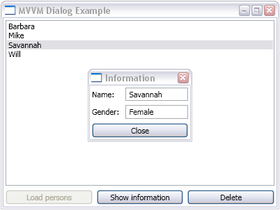

Title: Showing dialogs using MVVM pattern Author: Mattias Kindborg Email: mattias.kindborg@gmail.com Member ID: 1900638 Language: C# 3.0 Platform: .NET 3.5 Technology: WPF, XAML Level: Intermediate Description: An article on something-or-other Section Languages SubSection C# License: Choose your license (CPOL, CPL, MIT, etc)

What the article/code snippet does, why it's useful, the problem it solves etc.
Is there any background to this article that may be useful such as an introduction to the basic ideas presented?
A brief description of how to use the article or code. The class names, the methods and properties, any tricks or tips.
Blocks of code should be wrapped in <pre> tags like this:
// // Any source code blocks look like this //
Variable or class names should be wrapped in <code> tags like this.
Did you learn anything interesting/fun/annoying while writing the code? Did you do anything particularly clever or wild or zany?
Keep a running update of any changes or improvements you've made here.